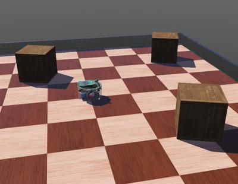

AI <<
Previous Next >> onelink
Tutorial
Webots R2025a 執行環境硬體需求:
2 GHz 4 核心以上 CPU, NVIDIA 或 AMD 支援 OpenGL 3.3 版, 帶有 512 MB 記憶體以上獨立顯示卡
操作系統:
Windows 10 或 11 64 位元操作系統
Ubuntu 24.04 以上版本
macOS 12 以上版本操作系統
使用介面:
Webots 可以透過 Tools - Preferences - Language 中選擇使用 English 或簡體中文介面 (目前無繁體中文介面, 介面語系翻譯請參考 translations 頁面說明), 在此強烈建議使用 English 界面即可.
Webots 版本差異:
每一版本都有些微差異, cd2025 將使用 R2025a.
R2025a changelog
Webots 原始碼使用授權:
採 Apache 2.0 license agreement. Apache 2.0 是一種開放且對企業友善的授權條款, 允許任何人免費使用、修改和分享軟體的原始程式碼, 包括商業用途使用.
自行編譯 Webots 請參考 building Webots 頁面說明.
Webots 套件中的大部分範例模擬檔案都使用 Apache 2.0 許可釋出, 但有部分機器人和物件模型（proto 檔案）則是根據 Webots 資產的開放原始碼許可協議發佈, 另外有些範例則是由用戶根據不同的開源許可證所提供, 這些檔案都會明確標示其許可證內容.
Webots 介紹: (查英英字典: https://www.merriam-webster.com/dictionary/)
What is Webots?
What can I do with Webots?
Webots simulation
What is a world?
What is a controller?
What is a supervisor controller?
第一個 Webots 導引: https://cyberbotics.com/doc/guide/tutorial-1-your-first-simulation-in-webots
登入 Github, 在 https://github.com/copilot 的協助下執行此一教學練習.
導引目的: You will create your first simulation containing a simple environment: an arena with floor and walls, a few boxes, an e-puck robot and a controller program that will make the robot move.
建立一個簡單的模擬環境, 意即一個競技場中, 包括一個帶有地板、圍牆、幾個盒子、一個 e-puck 機器人, 以及能讓機器人移動的控制程式.

開啟 Webots 前, 請下載 Webots_2025a.7z (1.5 GB, 解開後約為 2.9GB).
有關 Webots 在 Windows 操作系統啟動, 請參考說明. 有關 Web streaming 也請參考說明.
Webots 的可執行檔案位於 Y:\Webots_2025a\msys64\mingw64\bin\Webotsw.exe, 當與 python_2025_lite.7z 配置時, 若希望在不上網的情況下執行官方範例, 則必須再預先下載 https://github.com/cyberbotics/webots/releases/tag/R2025a 中的 assets-2025a.zip, 存入 Y:\home_ipv6\AppData\Local\Cyberbotics\Webots\cache\assets 目錄, 否則啟動官方範例時, 必須從官方網站下載各範例中所導入的原型節點資料.
若 Webotsw.exe 並非是在可攜程式的環境中啟動, 則 Webots 啟動後所下載的原型節點資料, 將會存入操作系統中的 C:\Users\%USERNAME%\AppData\Local\Cyberbotics\Webots\cache\assets 目錄中.
在可攜程式環境中啟動 Webots 的設定:
start_ipv6.bat 中納入:
REM for webots
set path_webots=%Disk%:\Webots_2025a\msys64\mingw64\bin;%Disk%:\Webots_2025a\msys64\usr\bin
並將 %path_webots% 放入 PATH 環境變數設定中.
若希望在執行 start_ipv6.bat 時開啟 Webots, 可以在啟動可攜程式的批次檔案中加入 start webotsw.exe
在可攜程式環境中 (USB 固態硬碟、一般隨身碟、筆電或個人電腦) 啟動 Webots 後, 開始建立模擬世界(即場景), 而在 Webots 中所謂場景:
A World is a file containing information like where the objects are, what they look like, how they interact with each other, what is the color of the sky, and the definitions of gravity, friction, masses of the objects, etc. It defines the initial state of a simulation. The different objects are called Nodes and are organized hierarchically in a Scene Tree. Therefore, a node may contain sub-nodes. A world is stored in a file having the .wbt extension. The file format is derived from the VRML97 language, and is human readable. The world files must be stored directly in a directory called worlds.
Webots 場景中包含以下定義:
- 物件所在位置
- 物件的外形
- 物件如何互動
- 天空的顏色
- 地心引力的定義
- 摩擦力
- 物件的質量
- 模擬的起始條件
- 其他有關模擬的設定等
場景中的物件稱為節點, 各節點配置於場景樹中, 各節點可以再包含子節點, 場景的檔案格式源自 VRML97 程式語法 (VRML Primer and Tutorial), 場景的檔案副檔名為 .wbt, 且一定要存入名稱為 worlds 的目錄中.
Webots 模擬選單功能說明: https://cyberbotics.com/doc/guide/the-user-interface#simulation-menu 其中著色選單可以關閉場景中的畫面, 主要配合基因演算、視覺辨識或機器學習流程中的快速模擬流程.
AI <<
Previous Next >> onelink